近半台人不認同川普「反DEI」


天下學習蒐集了4,688名員工心聲，發現近半（48%）人不認同川普的反DEI措施，30%表示無意見。
資誠（PwC）企業管理顧問公司執行董事桂竹安指出用人唯才與多元包容不該是衝突的，企業必須回到DEI本質，讓多元人才的價值真正體現在業務中，而非僅僅是滿足指標，「川普的某些言論，其實也提醒了企業，如果只是表態，而沒有真正落實DEI，反而會變成一場數字遊戲，最終引發反彈。」

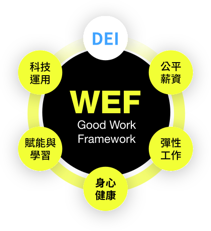
何謂DEI的本質？
世界經濟論壇（WEF）指出，一份「好工作」應包括：公平薪酬、科技平權、彈性工作與支持、身心健康與福祉、賦能與學習文化、多元平等共融；而最終的目的，是為了創造一個「所有人都能被好好對待與善用」的職場環境。
DEI不僅是「好工作」的價值之一，更是改善職場環境的重要支點。
回看台灣社會，其實尚未邁開足夠的一步，要談反向歧視可能還言之過早，「合規」依然是重要的行動之一。政大企管系特聘教授胡昌亞以「安全帽」比喻，台灣一開始就是靠強制規定「騎車就要戴安全帽」，才有辦法內化成普遍的交通安全意識。
員工體感全面下滑，台灣職場怎麼了？


2024年，全台職場霸凌及身心殞落事件頻傳；根據研究統計，台灣員工倦怠（Burnout）比例更是世界第一，每5人中就有一人曾因工作求助身心科，如今，員工遇到騷擾與歧視時，選擇向上反應的比例是3年來最高。
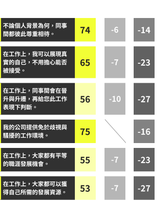
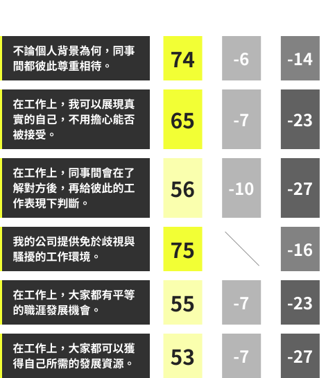
天下學習今年再度與韋來韜悅WTW合作，對比國際超過一萬名員工的實際職場感受，卻發現：儘管企業的DEI作為獲得台灣員工3年來的最高評價（66.9分），職場感受指標卻是全數下滑、且遠遠低於全球領先指標。
這表示，台灣「DEI」的近況來到了前所未有的交叉點，WTW周秉奇以「失去準頭的來福槍」比喻，當員工意識高漲、也看見企業有所作為，但實際情形卻是，企業怎麼樣都沒能準確命中員工內心需求。
至於應該如何消弭其間落差？韋萊韜悅（WTW）員工體驗諮詢業務國際區域（亞太、中東／歐及拉美）負責人Keiko Osaka表示，共融（Inclusion）的文化有賴於高階領導者的認知。領導者能接受差異的存在、並且認同差異的價值，相當重要，這也是一種領導者必須具備的「能力」（Capability）。
企業該追求的不只合規，
而是雙贏
而是雙贏

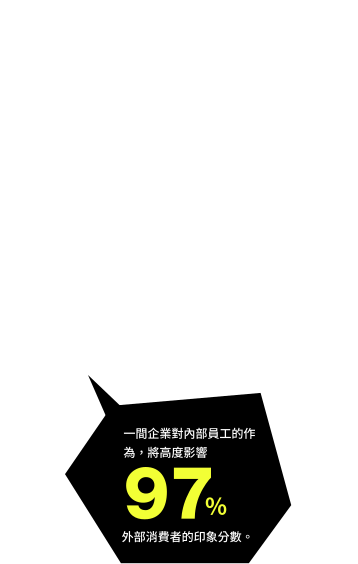

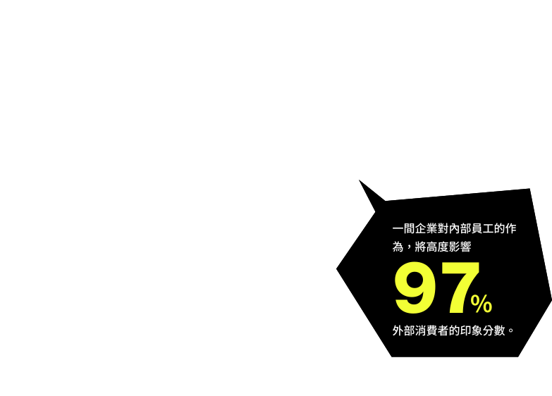
天下學習本次調查還發現，當人們感到職場沒有歧視與偏見時，留任意願將高出10.2倍；作為外部消費者，一間企業如何對待和處理內部員工議題，也有高達97%人表示會高度影響他們對該公司的印象分數，甚至是消費意願。
換言之，企業推動DEI，既是留才解方，更是維護品牌信譽的必要作為。

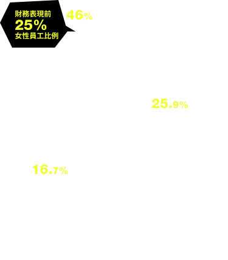
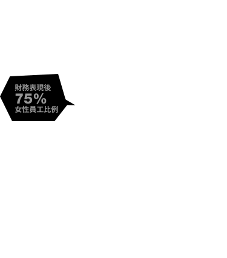
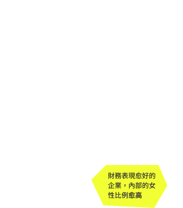

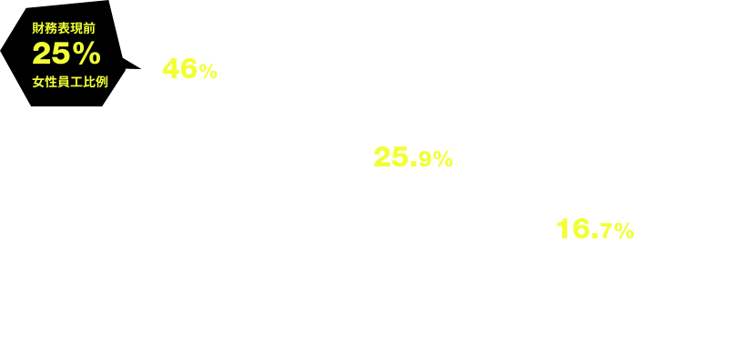
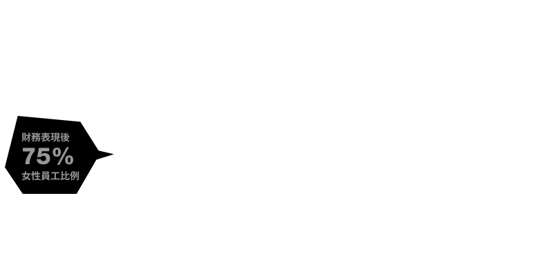
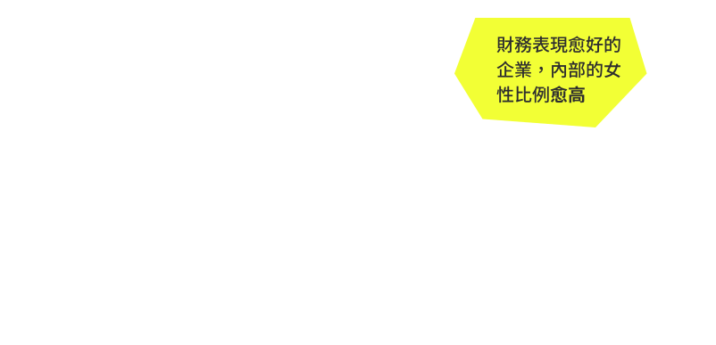
更重要的是，多項國外研究顯示，推動DEI與企業財務表現有正相關。根據麥肯錫2023年調查，高階主管性別多元化比例處於前25%的公司，比處於後25%的公司實現財務表現的可能性高出 39%。做為對照，天下學習本次與輔仁大學永續中心合作，首度爬梳也證實：台灣TOP50企業，財務表現愈佳者，內部的女性員工比例愈高。